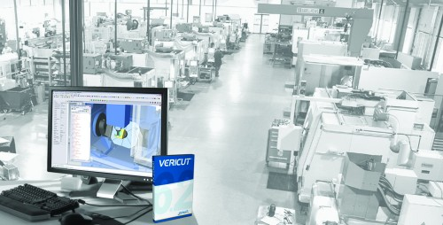
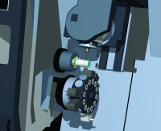
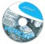

| Haydi korkmayýn... |
Tezgahýnýzý BÝNDÝRÝN!.. |
... ama sadece VERICUT içinde. |
 |
VERICUT, dünyanýn bir numaralý CNC simülasyon yazýlýmý...
Her çeþit talaþlý imalatta,
tüm CAD/CAM sistemleri ile uyumlu,
elle programlanmýþ veya
CAM programýndan çýkmýþ
bütün NC kodlarý ile çalýþýr. |
 |
|
VERICUT’ýn sanal imalat ortamýnda,
CNC iþleme sürecinin simülasyon ve optimizasyonu
eksiksiz olarak yapýlýr. |
| VERICUT ile artýk: |
| |
* dalma-bindirme yok!
* deneme iþlemesi yok!
* iþleme süresi kýsalýyor! |
* takým ömrü artýyor!
* CNC’nizin verimi artýyor!
* rekabet gücünüz artýyor! |
|
Ücretsiz tanýtým CD’nizi
hemen bugün isteyebilirsiniz! |
|
Üçgen Yazýlým Danýþmanlýk Bilgisayar ve Makine San. Tic. Ltd. Þti.
Poyraz Sok. Sadýkoðlu Ýþ Merkezi 2 Kat:1 Daire:14 Tuðlacýbaþý
Kadýköy Ýstanbul
Tel: (216) 550 52 06 - Faks: (216) 550 52 07
www.ucgenyazilim.com - bilgi@ucgenyazilim.com |
Not: Bu sayfayi hatasiz gormek icin tiklayiniz:
http://www.turkcadcam.net/ilan/html/ucgen-yazilim-02 |